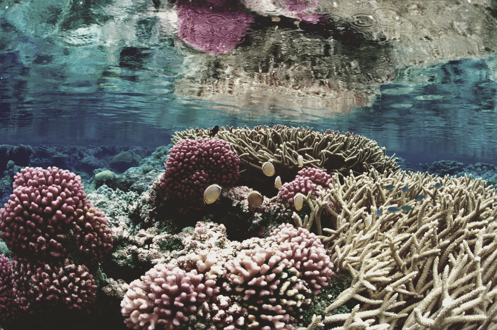

A field this important shouldn’t be this hard to find.
Building field infrastructure for Earth systems stabilization.
Talk to usPalmyra Atoll, central Pacific Jim Maragos / USFWS, CC BY 2.0

Building field infrastructure for Earth systems stabilization.
Talk to usPalmyra Atoll, central Pacific Jim Maragos / USFWS, CC BY 2.0